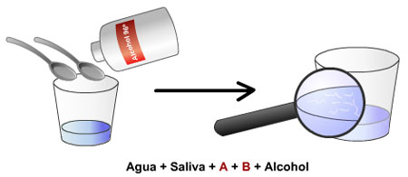

|
MATERIALES:
|
 |
FUNDAMENTO CIENTÍFICO:
La saliva arrastra las células del epitelio que recubre las paredes internas de la boca y que se están desprendiendo constantemente. La sal común (NaCl), con esa concentración, es un medio hipertónico que provoca el estallido de las células y los núcleos, quedando libre las fibras de cromatina. El detergente cumple la misión de formar un complejo con las proteínas histonas y separarlas del ADN.
PROCEDIMIENTO:
- Cada participante recibe un pequeño frasco de cristal. En él deposita 15 mL de tampón frío que ha pipeteado.
- A continuación escupe unas siete veces en el interior del frasco, teniendo la precaución de no haber ingerido alimento alguno en los 15 minutos previos.
- Mueve ligeramente el frasco para que se mezclen bien.
- Pipetea 15 mL de alcohol de 96° frío y lo deja caer resbalando por las paredes del frasco.
En la interfase agua-alcohol se empiezan a visualizar inmediatamente unas fibras blanquecinas que son las moléculas de ADN. Como complemento, se pueden recoger estas fibras con una varilla de cristal y teñirlas con azul de metileno para observarlo al microscopio óptico.